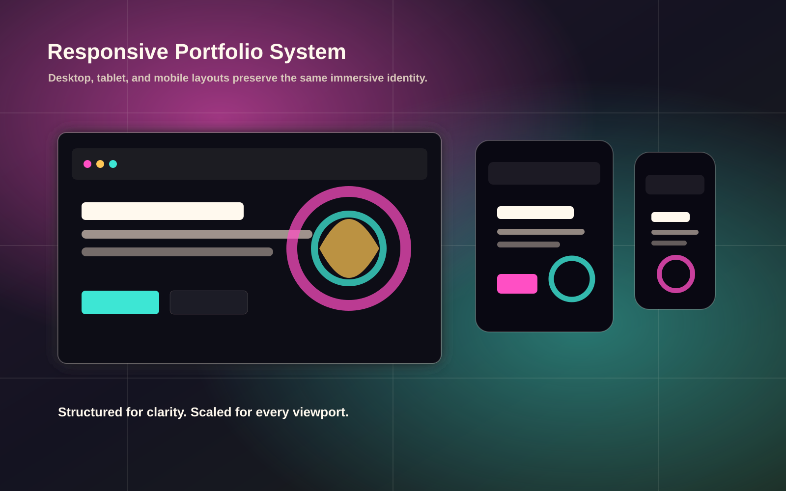
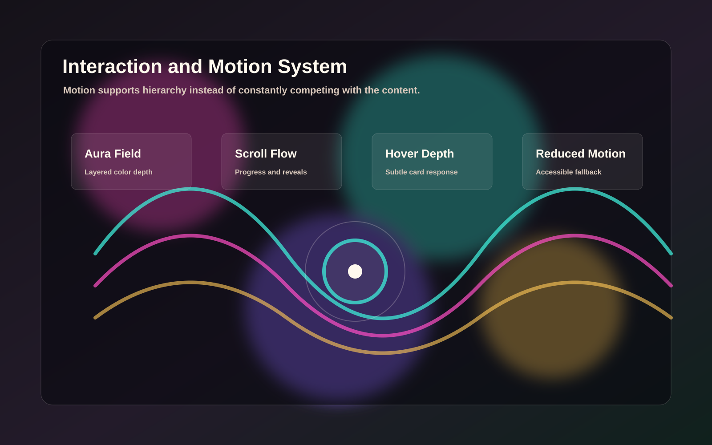
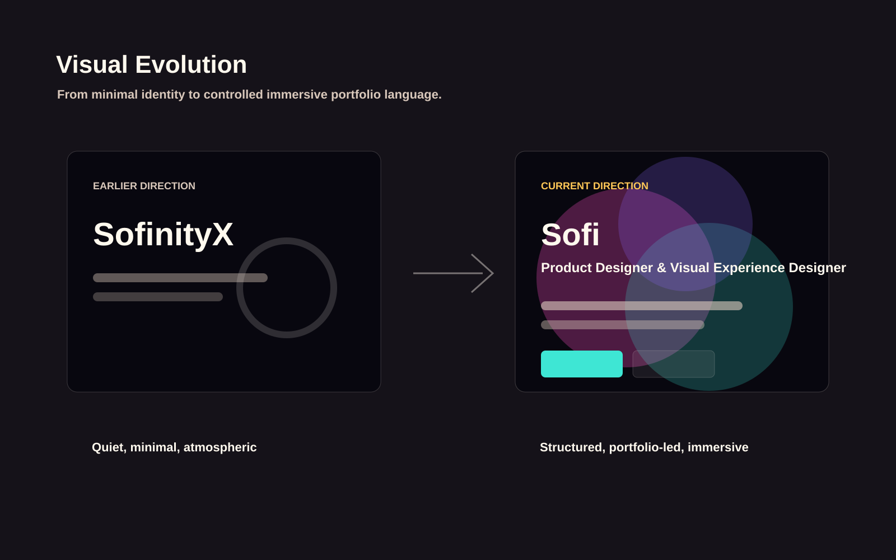
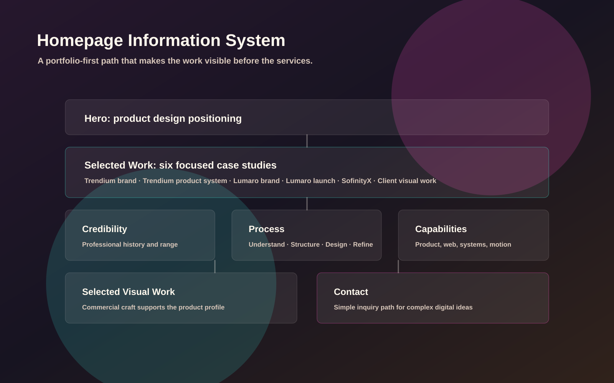

Portfolio-first structure
Selected work appears before services so visitors see product thinking and case-study depth early.
Brand · Responsive Web Experience
The evolution of my personal website into a product-design portfolio that preserves an immersive psychedelic identity while improving structure, readability, responsiveness, and professional positioning.

Challenge
The site needed to feel distinctive and alive, but the main message had to be clear: I design products, interfaces, websites, systems, and immersive visual experiences.
Design Decisions
Selected work appears before services so visitors see product thinking and case-study depth early.
Motion, color fields, noise, and glow remain part of the identity while text stays stable and readable.
Reduced-motion support, visible focus states, and mobile performance choices keep the experience usable.
The copy presents Sofi as a product designer while still referencing SofinityX as an experimental studio.
Process
Design System Assets



Outcome
The current site presents a more mature product-design portfolio while preserving the immersive personality that makes SofinityX recognizable.